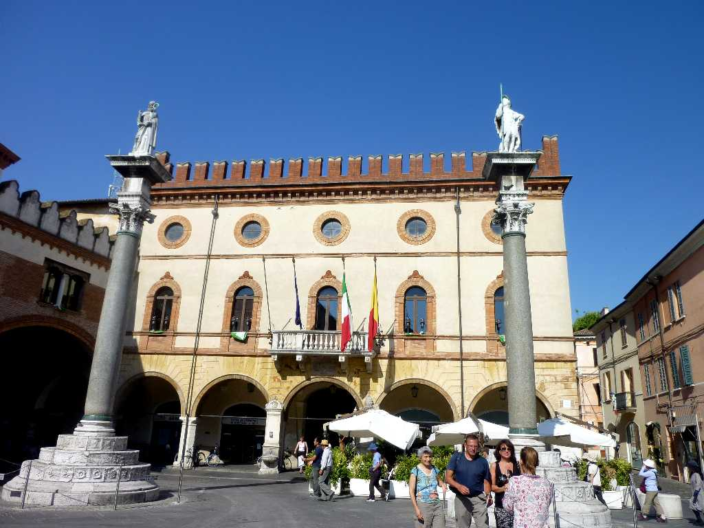
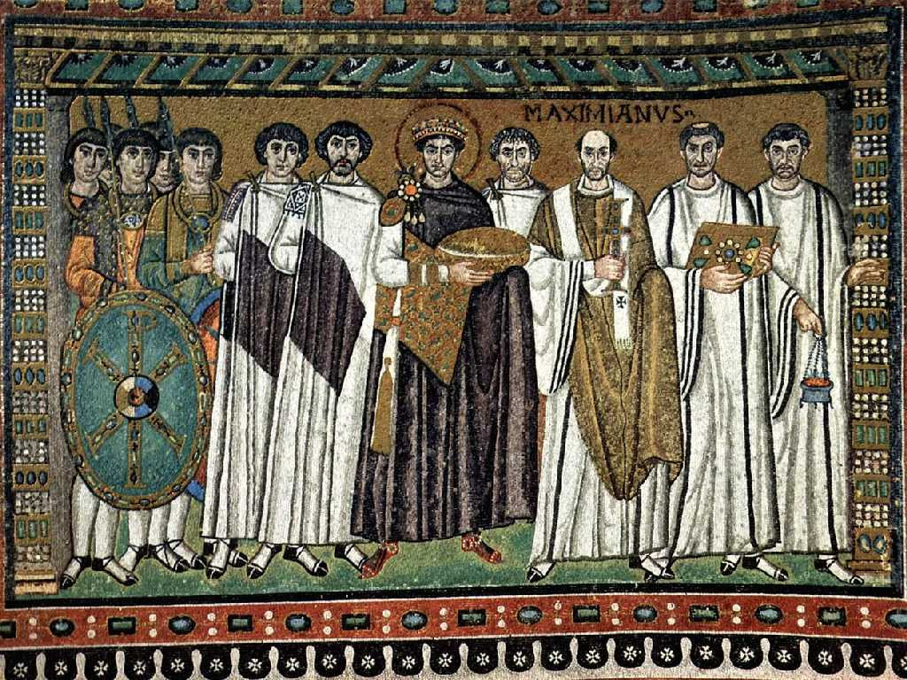
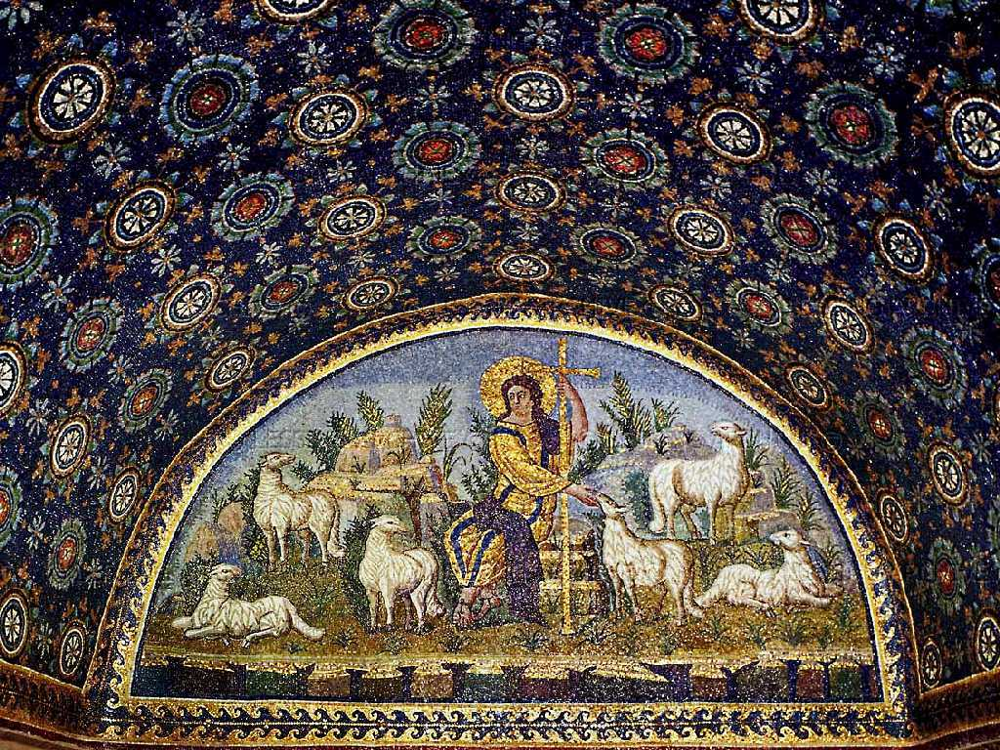

Piazza del Popolo Ravenna
ラヴェンナは５世紀に西ローマ帝国の首都として栄え６世紀には東ローマ帝国の首都となりアドリア海の交易都市として栄えた

Justinian and his retinue Basilica di San Vitale Ravenna
色彩のシンフォニーと云われるビザンチン芸術の傑作である６世紀に創られたサン・ヴィターレ聖堂のモザイク画

The Good Shepherd Mausoleo di Galla Placidia Ravenna
５世紀に創られたガッラ・プラキディア廟堂のモザイク画